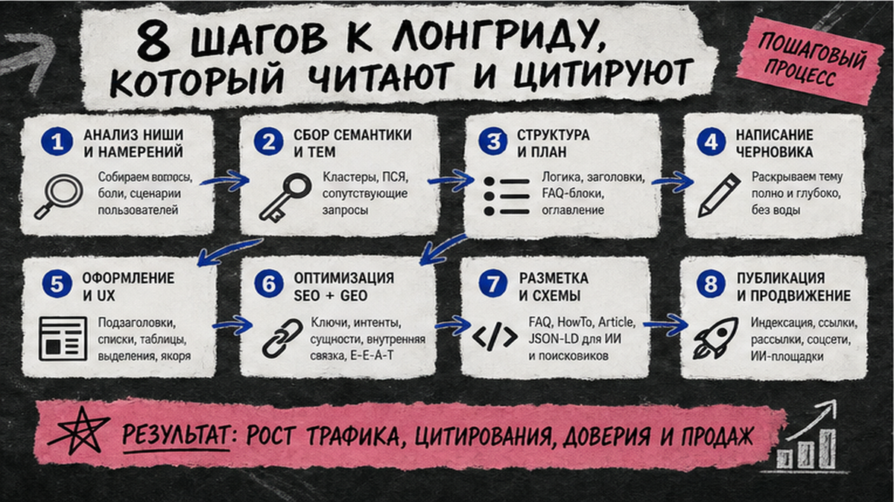
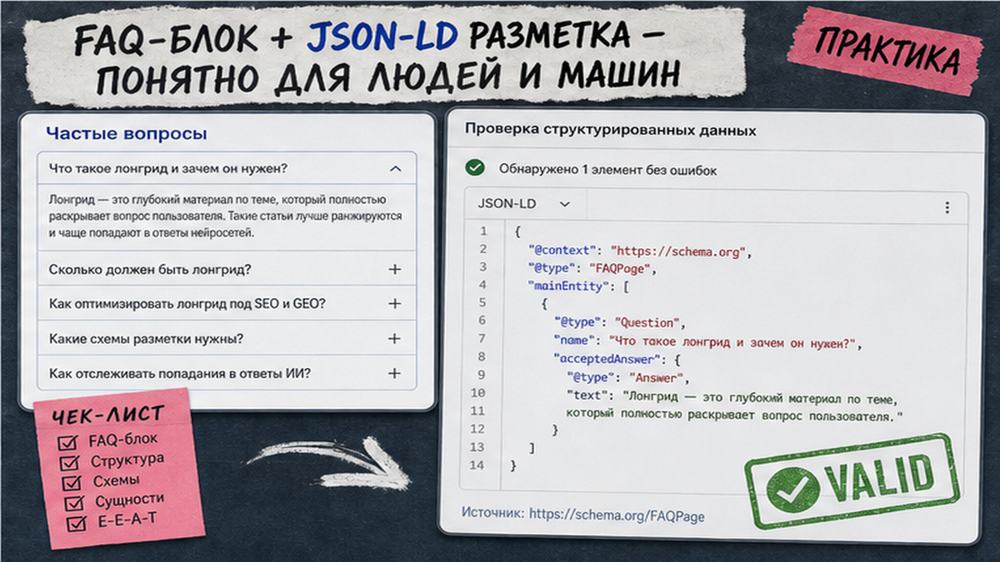

Текст набит ключами, в выдаче он есть, а люди уходят после первого абзаца - и поиск это замечает. SEO-статья в 2026 году - это longread, который закрывает запрос целиком и одновременно упакован для нейропоиска. Ниже единый workflow: семантика в Вордстат, структура H2, читабельный текст, FAQ и schema. Пройдя восемь шагов, вы соберёте seo текст для блога без второго проекта под GEO.
TL;DR / Быстрый инсайт: SEO-статья отвечает на запрос человека в обычной выдаче; GEO (Generative Engine Optimization) - дополнительная упаковка тех же блоков для цитирования в Яндекс Нейро и AI Overviews. Один материал: интент и 3-10 запросов в Вордстат, outline с answer-first после каждого H2, абзацы по 3-5 строк, FAQ 5-7 пар, BlogPosting + FAQPage. Универсального объёма нет - ориентир для how-to longread: 8 500-9 500 знаков.
SEO-статья - текст под конкретный запрос: человек находит страницу и получает полный ответ. В 2026 году нейропоиск вырезает фрагменты, а не читает страницу целиком - каждый H2 должен быть понятен сам по себе. Мы в редакции Maya AI собираем longread по одному контракту: research, writer, QA, schema, publish - без отдельного проекта "только под GEO". Эта страница следует тем же правилам, что описаны ниже.
Классическое SEO отвечает на вопрос: найдёт ли человек страницу и кликнет ли в сниппет. GEO дополняет SEO: цель - цитирование в генеративных ответах, когда пользователь спрашивает нейросеть, а не вводит запрос в строку. GEO не заменяет SEO - без индексации и базовой структуры AI просто не увидит ваш текст.
Поисковики оценивают смысл, не плотность ключей - переспам вреден. Возврат в поиск после вашей страницы - сигнал низкого качества. По Text.ru, 44,2% ИИ-цитат - из первых 30% текста.
| Критерий | SEO | GEO |
|---|---|---|
| Цель | Клик из выдачи и удержание на странице | Цитирование в AI-ответах (Нейро, AI Overviews) |
| Формат ответа | Сниппет Title + Description | Короткий фрагмент из H2 или FAQ |
| Структура | H1-H3, списки, внутренние ссылки | Атомарные чанки 100-380 слов, тезис в первом предложении |
| Техника | Мета, alt, Вордстат, перелинковка | Schema JSON-LD, llms.txt, FAQ в HTML |
Делайте: пишите для человека, упаковывайте для AI в том же файле. Не делайте: отдельный "роботский" текст под нейропоиск - он хуже и для людей, и для цитирования.
Схема единого workflow:
Запрос и интент → семантика (Вордстат) → outline H2/H3 → lead-абзац → текст с чанками → мета → FAQ → schema JSON-LD → чеклист перед публикацией
GEO - настройка полезного текста так, чтобы AI вырезал определение, шаг или ответ. Под каждым H2 - прямой ответ 40-80 слов. llms.txt в корне - optional карта для AI-краулеров, не замена sitemap. Princeton GEO-bench (KDD 2024): структура даёт +30-40% visibility в генеративной выдаче.

Универсального объёма SEO-статьи не существует - он зависит от сложности темы и конкуренции в выдаче. Для how-to longread ориентир 8 500-9 500 знаков: достаточно глубины без воды. Семантику собирают в Яндекс Вордстат и Яндекс Вебмастер: primary query, вторичные запросы, LSI-слова по теме. Одна страница закрывает один смысловой кластер - обычно 3-10 связанных запросов.
Title - около 65 знаков с ключом и триггером. H1 отличается от Title: один H1 на страницу, H2-H3 - смысловые блоки.
Абзацы - 3-5 строк. Делайте: короткие блоки с тезисом в первом предложении. Не делайте: поток ключей без структуры.
Ориентируйтесь на полноту ответа и топ SERP. Короткая заметка не закроет how-to, если конкуренты дают чек-листы; раздувание без новых фактов тоже не помогает. E-E-A-T - автор, дата, ссылки на источники, без выдуманных "+140%". Алиса AI берёт 5 источников из топ-30 органики (Text.ru).

FAQ в HTML - готовые чанки для AI: вопросы про объём, GEO, schema; ответы 2-4 предложения. Минимум BlogPosting + FAQPage в JSON-LD - разметка в отдельном файле, не в body. Текст в FAQ и schema совпадает. FAQ rich results в Google прекратились 7 мая 2026, но FAQPage валиден для LLM и Яндекс Нейро. Делайте: дублируйте FAQ в HTML и schema. Не делайте: schema без видимого блока на странице.
Заведите шаблон article.html + meta + schema - один пайплайн на тему. Конвейер можно автоматизировать в курсе по Make.com; про geo оптимизацию сайта - в соседних материалах блога.
Перед выкладкой пройдите список - можно сохранить как шаблон в Notion или таблице.
Делайте: отмечайте пункты перед каждым постом. Не делайте: публиковать без совпадения FAQ в HTML и schema.
Закрепите ритм: тема → research → longread → QA → публикация. Вторая статья с перелинковкой на эту - якорь на главной блога. Обновите llms.txt после 5-10 материалов. Раз в квартал - ревизия дат и ссылок. Системный контент-пайплайн - в курсе Make.com; профиль эксперта - Артур Хорошев.
Материал проверен: эксперт Елена Ковалева (Главный эксперт по SEO/GEO).
Достоверность данных: ключевые рекомендации сверены с гайдом Яндекс Direct (январь 2026), материалами Click.ru, Text.ru и mayai.ru; точные показы Вордстат на дату публикации уточняйте в wordstat.yandex.ru.
Универсальной нормы нет - объём зависит от сложности темы и конкурентов в выдаче. Ориентир для how-to longread: 8 500-9 500 знаков, если SERP требует глубины. Сверьте топ-5 конкурентов и закройте те же подтемы без воды.
GEO (Generative Engine Optimization) дополняет SEO: цель - цитирование в AI-ответах (Яндекс Нейро, Google AI Overviews). База та же - индексируемый, структурированный и честный контент. Начните с answer-first блоков под каждым H2.
Нет. Поисковики оценивают смысл и полезность; переспам вреден. Используйте primary query в заголовках и lead, secondary и LSI - естественно в подзаголовках и абзацах.
Title - для сниппета в выдаче (около 65 знаков, ключ и триггер). H1 - заголовок на странице. Их не дублируйте: разные роли, один интент.
Минимум BlogPosting (или Article) и FAQPage, если есть блок вопросов. JSON-LD в отдельном файле или meta; текст FAQ должен совпадать с видимым HTML.
llms.txt - optional карта pillar-страниц для AI-краулеров в корне сайта. Полезный дополнительный сигнал рядом с sitemap, не замена индексации. Добавьте, когда накопится 5-10 ключевых материалов.
Пройдите чеклист: семантика, мета, структура H2, FAQ, schema, ссылки, читабельность, island test по блокам. После - технический QA: linter HTML, проверка ссылок, slop и каннибализация ключей.